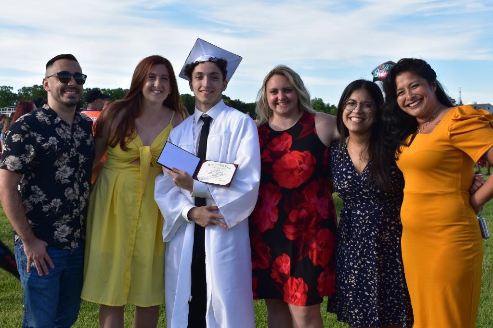

Schooling
- Bernon Heights Elementary
- Rockwell Elementary
- Henry J Winters Elementary
- Jenks Junior High School
- Burrillville Middle School
- Woonsocket Villa Nova Middle School
- Woonsocket Senior High School
Elementary School
- I went to Bernon Heights located in Woonsocket RI for my first 3 years of school. K-2
- I went to Rockwell Elementary located in Bristol RI for my next 1.5 years of school. Grade 3 and 1/2 of Grade 4

- I finished grade 4 at Henry J Winters and completed grade 5.
- The school is currently under renovations to look like the picture below. It was previously only one floor. The school got a grant for STEM programs which provided the funds for the renovations.
Middle School
- I started the 6th grade at Jenks
- I then went on to complete 6th and 7th grade in Burrillville
- I went to Woonsocket Middle School for the entirety of 8th grade and made friends that I still am friends with to this day.
High School
- I stayed at Woonsocket High School 9th grade through graduation. During this time I wrestled, played volleyball and skipped 132 days of my senior year(while passing with a 3.8 GPA)
- In 8th grade a group of computer science students were selected to participate in P-Tech giving us access to college level classes since freshman year. I graduated High School with a total of 52 credits from URI not counting the credits from URI and other various colleges.
